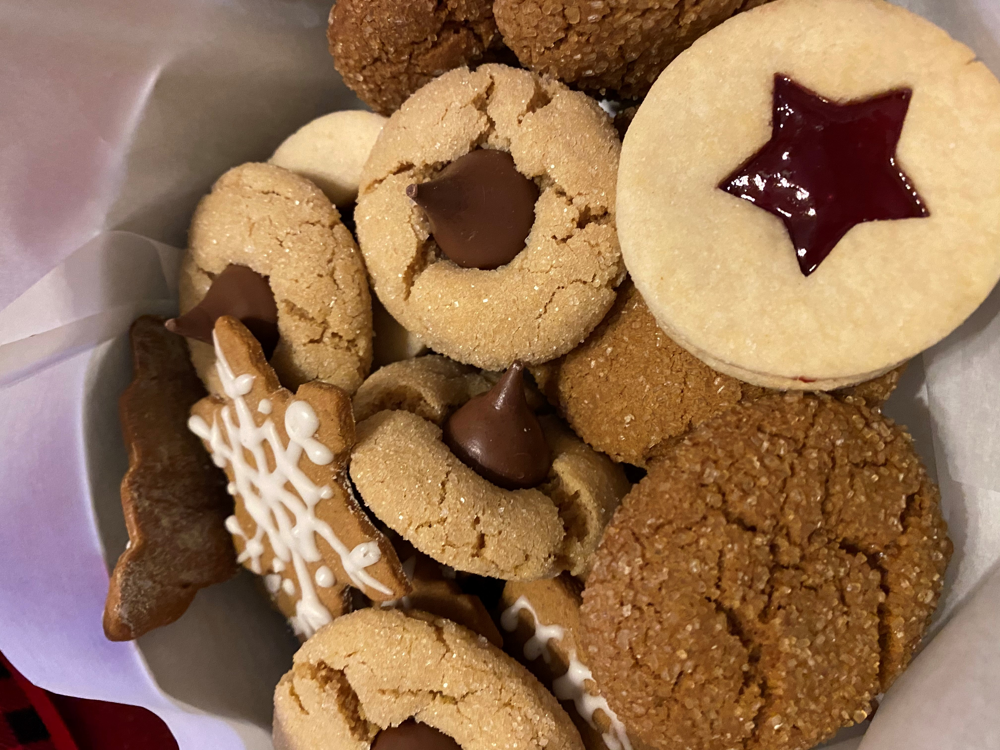
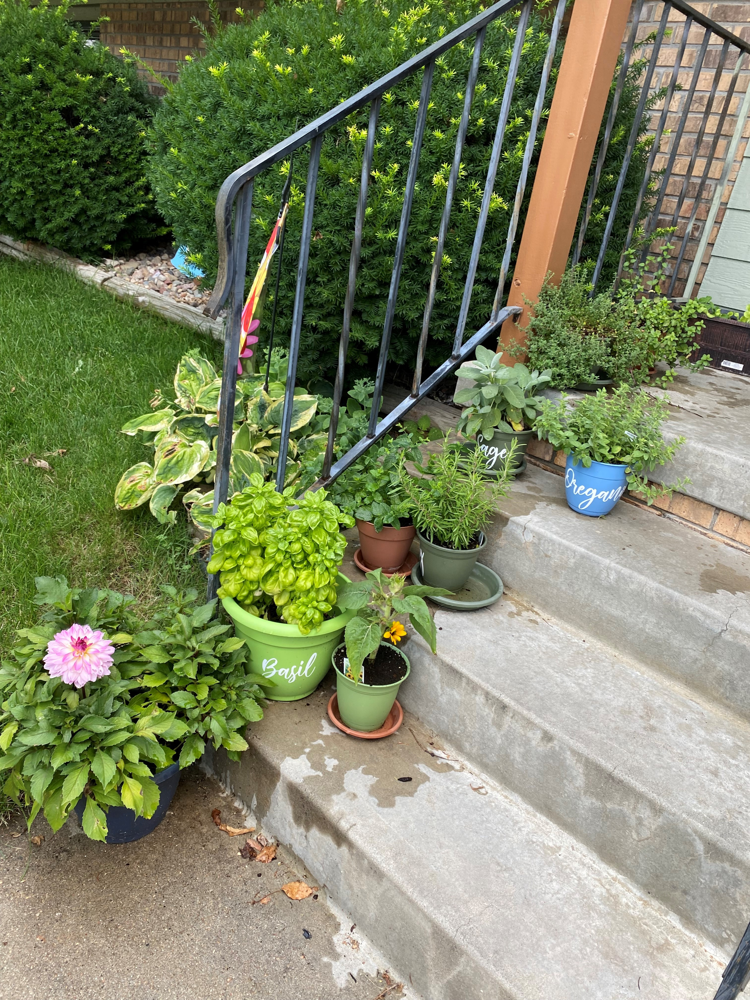
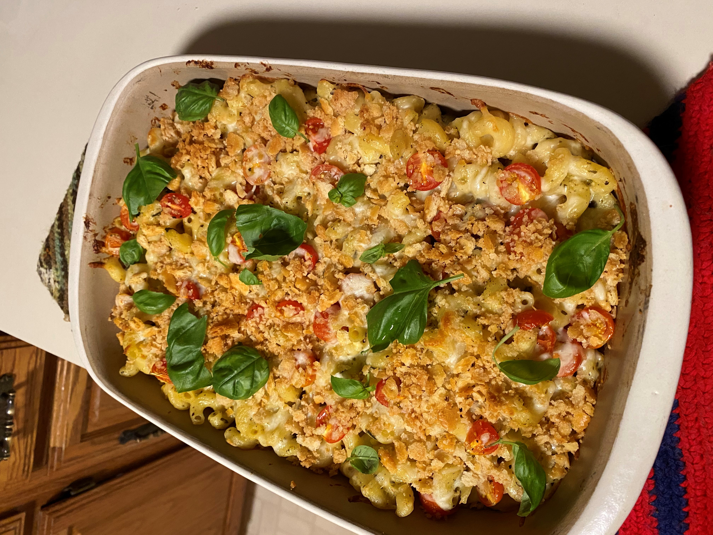
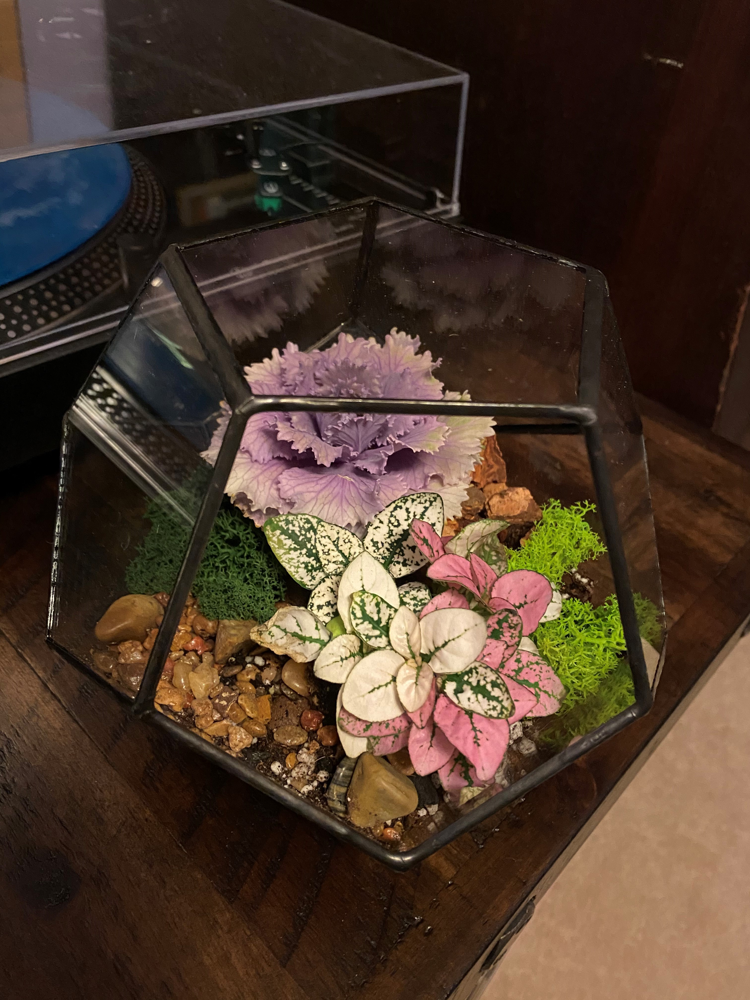
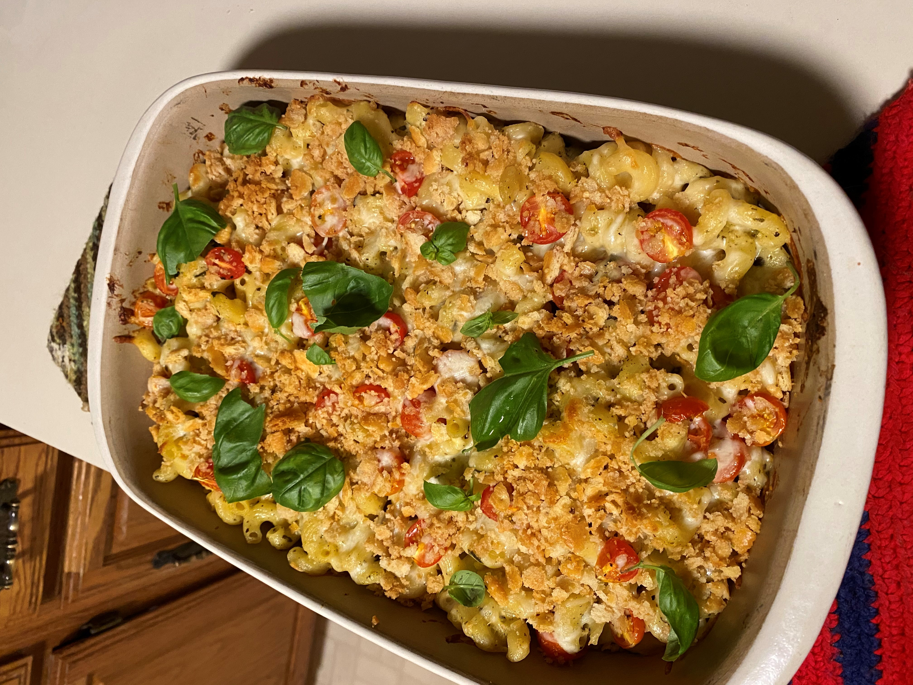
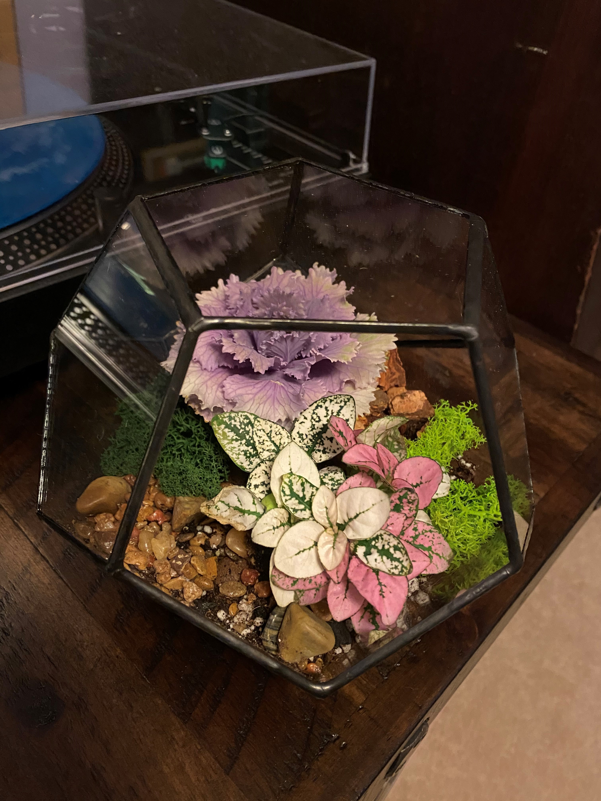

Creative Hobbies: Cooking Up a Garden
I'm always trying out creative hobbies, and the skills that I have learned in these
endeavors have built off of one another. I've enjoyed cooking since I was young, and like
many people I began to cook more during the last couple years. I value cooking with fresh
ingredients and so I also picked up gardening to fuel these cooking adventures.

I've always expressed myself through cooking and baking; I make all sorts of Christmas Cookies every year.

I started to grow fresh herbs to supplement my recipes.
 Before long I had built my very own raised bed full of seasonal produce.

Some mac and cheese I made full of garden fresh produce.

I even grew things outside of my vegetable garden. Here is a colorful terrarium I started.
Before long I had built my very own raised bed full of seasonal produce.

Some mac and cheese I made full of garden fresh produce.

I even grew things outside of my vegetable garden. Here is a colorful terrarium I started.